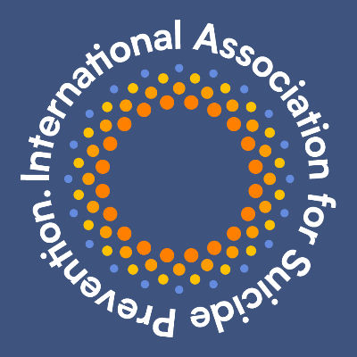

— In Memory of Those We've Lost —
An event dedicated to honoring those we lost and extending suicide prevention awareness and health support mental health within the VRChat community.
THE PURPOSE
Since 2025, many people have faced health difficulties mentally and we have lost friends to depression and suicide. This event honors them and keeps their memory alive.
In collaboration with Ministry Promotions, Projekt Community and 40+ communities across VRchat, we spread vital awareness about the prevention of suicide and mental health support in the community VR Spanish speaker.
This event is possible thanks to the collaboration of Noved Squad, Ministry Promotions , Projekt Community and 40+ communities through VRchat — joining forces to raise awareness and support those who need it most within VRChat.
THE CAUSE

Organization dedicated to preventing suicide and alleviating its effects globally. The IASP leads the global role in prevention of suicide by developing collaborative partnerships and promoting evidence-based action to reduce the incidence of suicide and suicidal behavior.
Learn about the IASP →DONAR
Donations are managed through Tiltify, a secure and transparent platform specialized in charity collections. The money goes directly to the International Association for Suicide Prevention, ensuring that every contribution has a real impact.
You can donate by clicking the button or scanning the QR code with your phone.
Donate on Tiltify →PARTICIPAR
The event takes place within VRChat, available for both PC VR and Quest users. Join the Discord to receive updates and VRChat group to access to the event.
If you or someone you know is going through a difficult time, there is available resources. You don't have to face it alone.